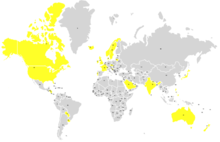

Snapchat is a multimedia messaging app used globally, created by Evan Spiegel, Bobby Murphy, and Reggie Brown, former students at Stanford University, and developed by Snap Inc., originally Snapchat Inc. One of the principal features of Snapchat is that pictures and messages are usually only available for a short time before they become inaccessible to users. The app has evolved from originally focusing on person-to-person photo sharing to presently featuring users' "Stories" of 24 hours of chronological content, along with "Discover", letting brands show ad-supported short-form content. Snapchat has become notable for representing a new, mobile-first direction for social media, and places significant emphasis on users interacting with virtual stickers and augmented reality objects. As of February 2018, Snapchat has 187 million daily active users.
 According to documents and deposition statements, Reggie Brown brought the idea for a disappearing pictures application to Evan Spiegel because Spiegel had prior business experience. Brown and Spiegel then pulled in Bobby Murphy, who had experience coding. The three worked closely together for several months and launched Snapchat as "Picaboo" on the iOS operating system on July 8, 2011. Reggie Brown was ousted from the company months after it was launched. The app was relaunched as Snapchat in September 2011, and the team focused on usability and technical aspects, rather than branding efforts. One exception was the decision to keep a mascot designed by Brown, "Ghostface Chillah", named after Ghostface Killah of the hip-hop group Wu-Tang Clan. On May 8, 2012, Reggie Brown sent an email to Evan Spiegel during their senior year at Stanford in which he offered to re-negotiate his equitable share regarding ownership of the company. Lawyers for Snapchat responded by insisting that he had never had any creative connection to the product. The attorneys also accused Brown of committing fraud against Spiegel and Murphy by falsely claiming to be a product inventor. On behalf of their clients, the law firm concluded that Reggie Brown had made no contributions of value or worth, and was therefore entitled to a share of nothing.In September 2014, Brown settled with Spiegel and Murphy for $157.5 million and was credited as one of the original authors of Snapchat. In their first blog post, dated May 9, 2012, CEO Evan Spiegel described the company's mission: "Snapchat isn’t about capturing the traditional Kodak moment. It’s about communicating with the full range of human emotion — not just what appears to be pretty or perfect."He presented Snapchat as the solution to stresses caused by the longevity of personal information on social media, evidenced by "emergency detagging of Facebook photos before job interviews and photoshopping blemishes out of candid shots before they hit the internet". Growth World map indicating Snapchat's core users by country in 2014. Map based on data from a report from Business Insider Intelligence. As of May 2012, 25 Snapchat images were being sent per second and, as of November 2012, users had shared over one billion photos on the Snapchat iOS app, with 20 million photos being shared per day.2 That same month, Spiegel cited problems with user base scalability as the reason why Snapchat was experiencing some difficulties delivering its images, known as "snaps", in real time.Snapchat was released as an Android app on October 29, 2012 In June 2013, Snapchat version 5.0, dubbed "Banquo", was released for iOS. The updated version introduced several speed and design enhancements, including swipe navigation, double-tap to reply, an improved friend finder, and in-app profiles. The name is a reference to the ghostly hero from Shakespeare's Macbeth, a character in the play who is ultimately seen to be victorious over evil. Also in June 2013, Snapchat introduced Snapkidz for users under 13 years of age. Snapkidz was part of the original Snapchat application and was activated when the user provided a date of birth to verify his/her age. Snapkidz allowed children to take snaps and draw on them, but they could not send snaps to other users and could only save snaps locally on the device being used. According to Snapchat's published statistics, as of May 2015, the app's users were sending 2 billion videos per day, reaching 6 billion by November. By 2016, Snapchat had hit 10 billion daily video views. In May 2016, Snapchat raised $1.81 billion in equity offering, suggesting strong investor interest in the company. By May 31, 2016, the app had almost 10 million daily active users in the United Kingdom.In February 2017, Snapchat had 160 million daily active users, growing to 166 million in May. Snapchat Spectacles Vending Machine at SXSW 2017, Austin, Texas In September 2016, Snapchat Inc. was renamed Snap Inc. to coincide with the introduction of the company's first hardware product, Spectacles— smartglasses with a built-in camera that can record 10 seconds of video at a time. On February 20, 2017, Spectacles became available for purchase online.